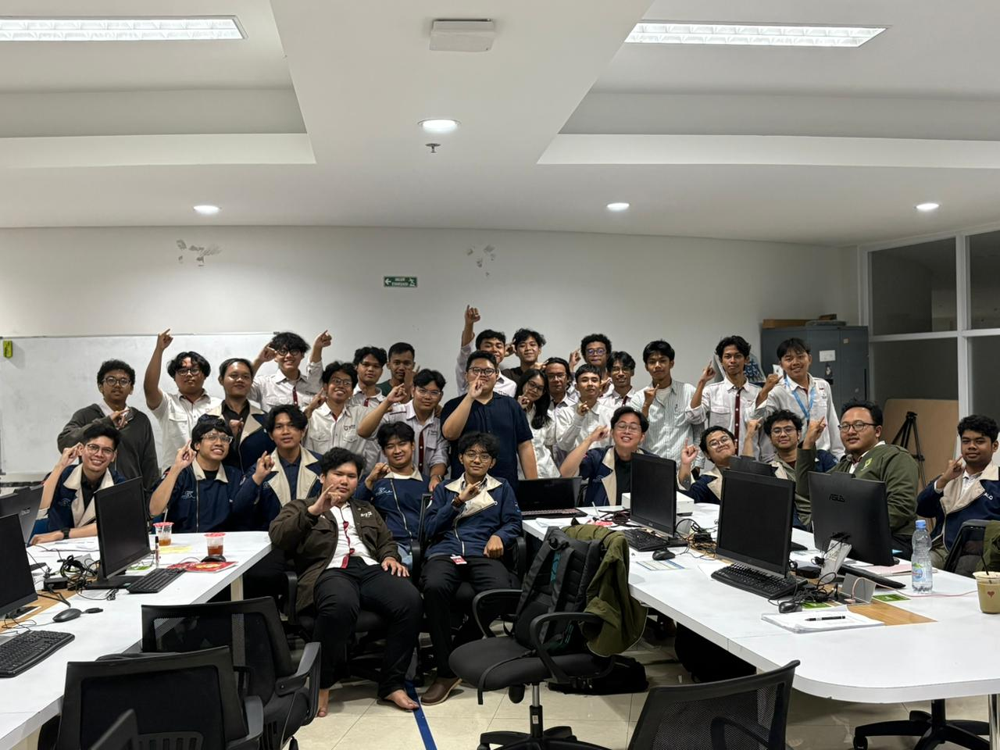
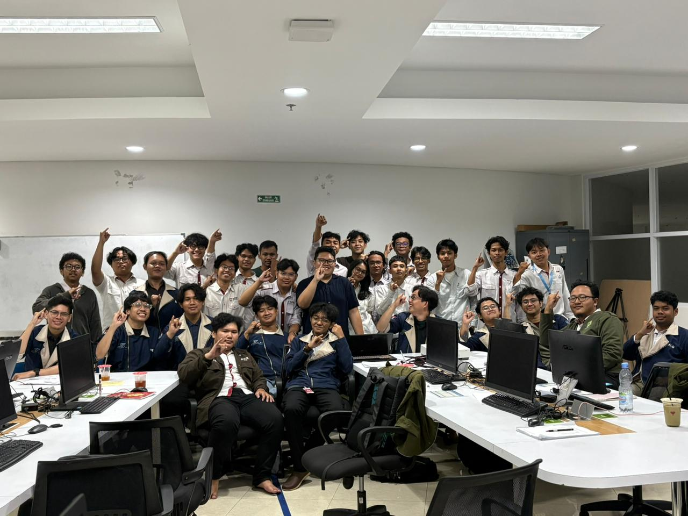
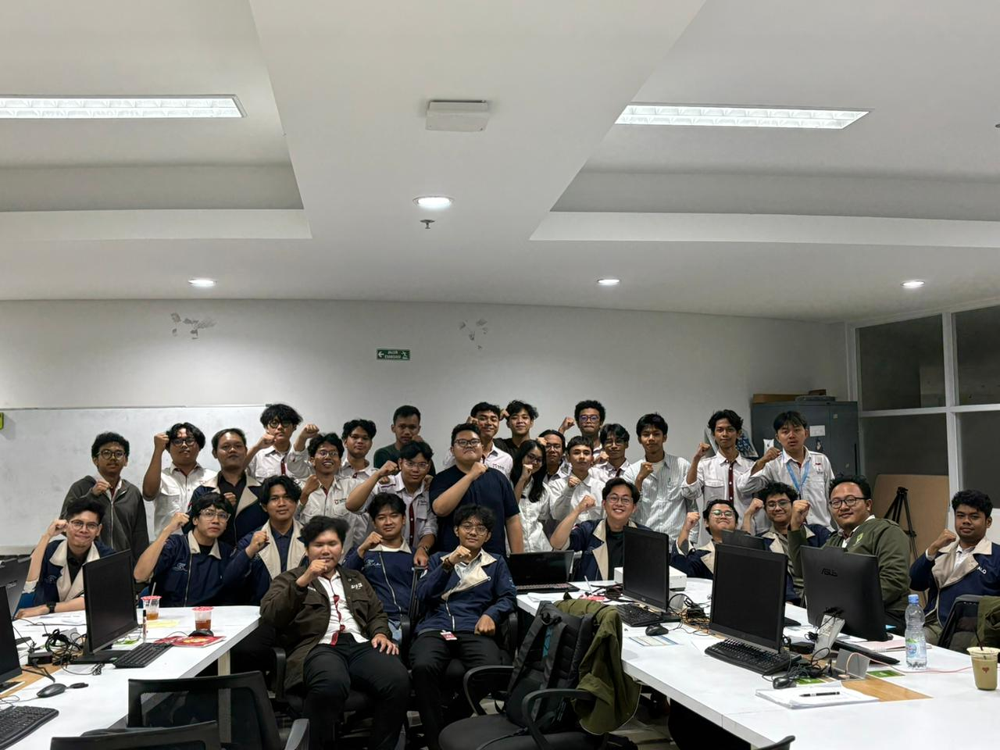

Alif Akbar A · ReLyf
A record of my experiences and contributions.
Scroll down to dive in.



Coordinating the creation and revision of practicum modules and learning materials.
Preparing pre-tests, post-tests, assignments, and evaluation materials.
Overseeing practicum journals and submission workflows.
Leading assistants and coordinating practicum activities.
Managing practicum schedules, timelines, and session planning.
Preparing presentation materials and supporting documentation.
relyf@seculab:~$ id
uid=2026(relyf) gid=1337(seculab) groups=1337(seculab),2027(study-group)
relyf@seculab:~$ systemctl status study-group
● study-group.service — SECULAB Study Group Coordinator
Loaded: loaded (/etc/seculab/2026-2027.conf; enabled)
Active: activating (start) — semester 1, just getting started
relyf@seculab:~$ cat roles.todo
SG-01Study Sessionsplan & host the group's sessionsSG-02Learning Pathcurate security & Linux materialSG-03Memberskeep people & schedules in syncSG-04Logsempty for now — first entries this semesterrelyf@seculab:~$
To be continued
More organisations and roles will be added here
as they unfold.